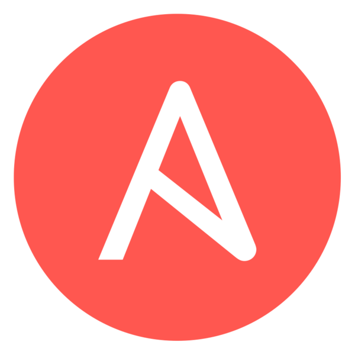

Jenkins Configuration Management with Ansible
Timo Mihaljov

A typical Jenkins setup

- GUI-based configuration
- Irrelevant settings
- No comments
- No abstractions
- Can't copy & paste
- Generated XML
- A single environment
- Testing in production
- Junk commits
- Messy VCS history
- Hard to tell who, what, when, how, and why?
- Hard to roll back individual changes
Job DSL and Pipeline

- Groovy-based DSL scripts
- Only relevant configuration
- Comments
- Constructs for abstraction
- Human-authored
- A single environment
- Testing in production
- Junk commits

Ansible to the rescue!
- Multiple environments
- Inventory per env
- Group vars for env details
- Templating for DSL scripts
- Develop in Vagrant
- Test before commit
- Commit before prod
Example
Ansible Project
jenkins-ansible-demo/
environments/
ci/
group_vars/
jenkins.yml
inventory
qa/
inventory
prod/
inventory
local/
inventory
jobs/
pipeline/
Hello.groovy.j2
Hello.groovy
jenkins.yml
Vagrantfile
QA Environment
environments/qa/inventory
[app]
jenkins-ansible-demo2
Prod Environment
environments/prod/inventory
[app]
jenkins-ansible-demo3
CI Environment
environments/ci/inventory
[jenkins]
jenkins-ansible-demo1environments/ci/group_vars/jenkins.yml
app_git: https://github.com/noidi/hello-java.git
ansible_git: https://github.com/solita/jenkins-ansible-demo.git
qa_inventory: environments/qa/inventory
prod_inventory: environments/prod/inventory
solita_jenkins_users:
- admin
Dev Environment
Vagrantfile
config.vm.synced_folder '../hello-java', '/hello-java'
config.vm.provision 'ansible' do |ansible|
ansible.playbook = 'site.yml'
ansible.groups = {
'jenkins' => ['default'],
'jenkins:vars' => {'app_path' => '/hello-java',
'ansible_path' => '/vagrant',
'qa_inventory' => 'environments/local/inventory',
'prod_inventory' => 'environments/local/inventory',
'solita_jenkins_security_realm' => 'none'},
'app' => ['default']
}
end
Local Environment
environments/local/inventory
[app]
localhost ansible_connection=local
Server Configuration
jenkins.yml
- hosts: jenkins
vars:
solita_jenkins_plugins:
- blueocean
- workflow-aggregator
- ansible
roles:
- solita.jenkins
- solita.ansible
Job Configuration
jobs/Hello.groovy (Job DSL)
pipelineJob('hello') {
definition {
cps {
script(readFileFromWorkspace('pipeline/Hello.groovy'))
sandbox()
}
}
}

Pipeline Configuration
jobs/pipeline/Hello.groovy.j2 (Pipeline DSL)
APP_GIT = "{{ app_git | default('') }}"
APP_PATH = "{{ app_path | default('') }}"
ANSIBLE_GIT = "{{ ansible_git | default('') }}"
ANSIBLE_PATH = "{{ ansible_path | default('') }}"
QA_INVENTORY = "{{ qa_inventory }}"
PROD_INVENTORY = "{{ prod_inventory }}"
node {
stage('Checkout') {
if (APP_GIT) {
checkout([
$class: 'GitSCM',
extensions: [[
$class: 'RelativeTargetDirectory',
relativeTargetDir: 'app'
]],
userRemoteConfigs: [[url: APP_GIT]]
])
} else if (APP_PATH) {
// Ignore "permission denied" errors
sh "rsync -av ${APP_PATH}/ app | true"
}
if (ANSIBLE_GIT) {
checkout([
$class: 'GitSCM',
extensions: [[
$class: 'RelativeTargetDirectory',
relativeTargetDir: 'ansible'
]],
userRemoteConfigs: [[url: ANSIBLE_GIT]]
])
} else if (ANSIBLE_PATH) {
// Ignore "permission denied" errors
sh "rsync -av ${ANSIBLE_PATH}/ ansible | true"
}
}
stage('Build') {
dir('app') {
sh 'mvn -B package'
archive 'target/hello.jar'
}
}
stage('Test') {
dir('app') {
sh 'mvn -B verify'
junit 'target/failsafe-reports/*.xml'
}
}
stage('Deploy to QA') {
dir('ansible') {
ansiblePlaybook([
playbook: 'deploy.yml',
inventory: QA_INVENTORY,
extraVars: [
hello_jar: '../app/target/hello.jar'
],
])
}
}
Demo